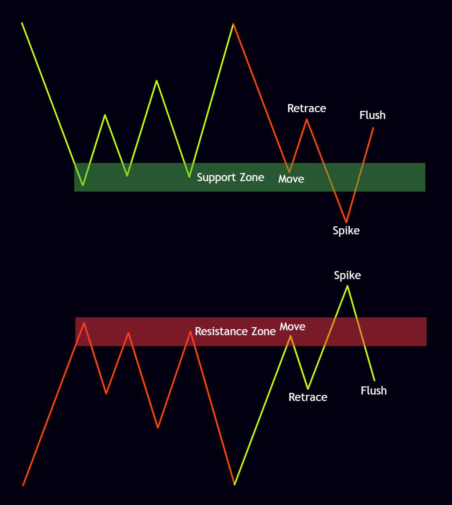
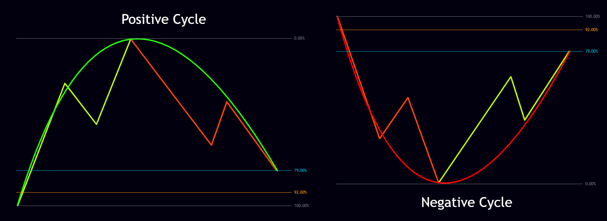
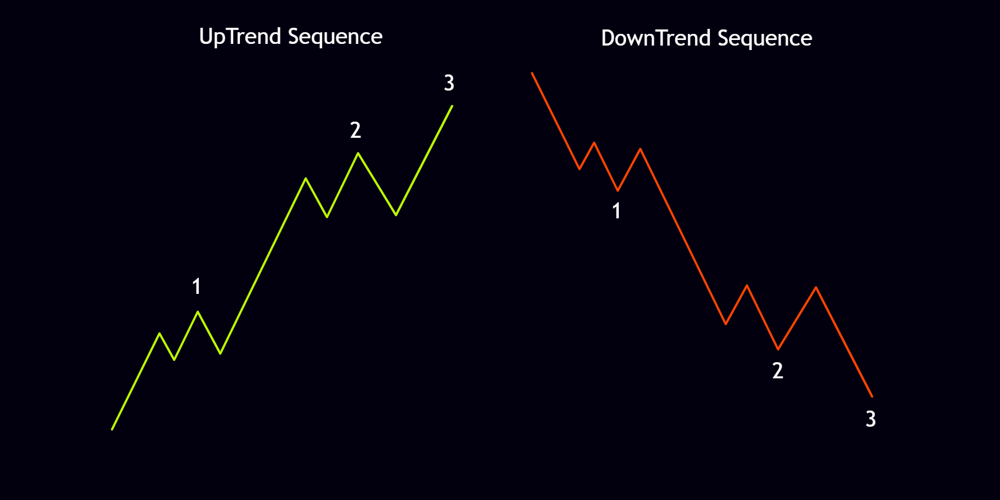
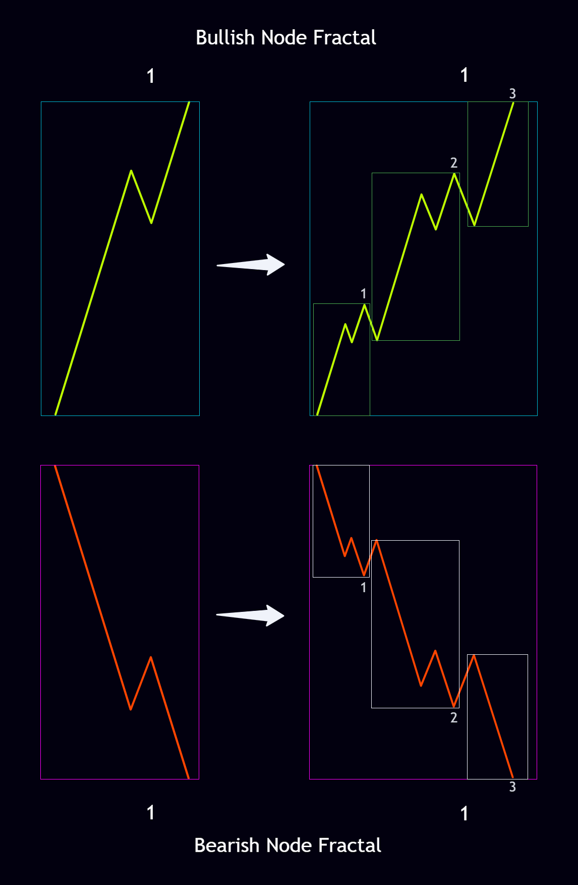
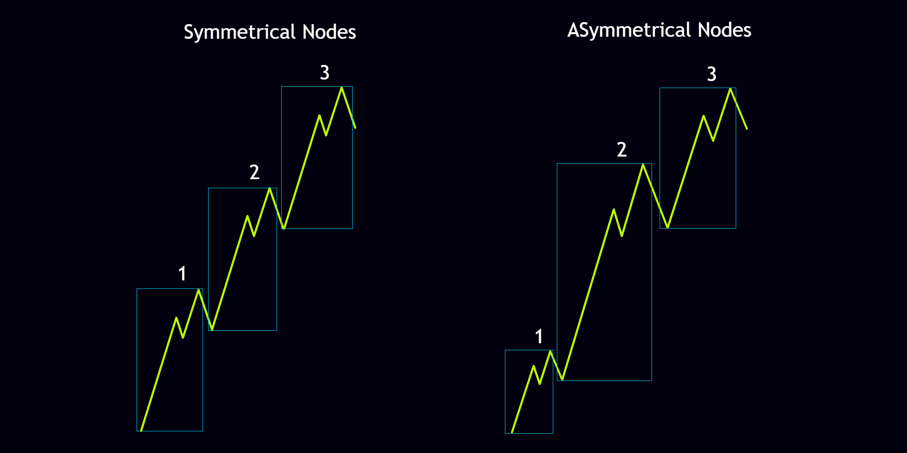

In this post, we’re going to take a broad look at all the building blocks of the N2N strategy. Because every foundation of this strategy is deeply interconnected, you can’t really dig into the details without first getting a solid overview. The N2N strategy rests on five pillars. Each one plays a major role in analyzing and reading the market, and together they help a trader understand market structure more clearly. These five pillars are:
If you look carefully at these five pillars, you’ll notice that none of them are abstract ideas. They’re part of the fundamental laws that govern life, nature, and the entire universe. These same five principles show up at every scale — from cells to galaxies — and form the hidden structure of the world.
Just as these foundations shape nature and the universe and are inseparable from the lives of every living thing, we can say that every part of our own lives is tied to them as well. And since financial markets are living organisms in their own right, these five pillars are clearly visible in them. They’re not new concepts in the markets; traders have used them in different trading styles for a long time. What’s different with the N2N strategy is the overall perspective and the way they’re applied. With this approach we decode these concepts and learn how to use them correctly to understand market structure.
A node, or knot, is a point where paths and forces converge and then branch out in new directions. In nature, the places where tree branches fork, rivers meet, and neural networks connect are all examples of nodes.
In the market, nodes are the important reversal points that mark the highs and lows of trends. After every node forms, the market corrects against the main direction of the move. All market movement travels from one node to the next. A trend usually consists of three nodes, while the corrections within a trend are usually made up of two nodes. As you can see in the image below, every node is built from three main sections plus one overall correction:

The philosophy behind nodes works like this: when the market is in an uptrend or downtrend (the Move), and it reaches important levels such as support or resistance, a large number of sellers (in an uptrend) or buyers (in a downtrend) step in against the direction, trying to reverse the move. At that point the market enters a Retrace phase. After a while it snaps back into the original trend with a sharp move we call the Spike, forcing all those opposing sellers (in an uptrend) or buyers (in a downtrend) to stop out. Once the high or low is broken, traders who use breakout strategies start taking positions, and the market hits them with a Flush that stops them out as well.

As mentioned, every trend is usually built from three nodes, which we call Node 1, Node 2, and Node 3. After the Flush correction, each node leaves behind one main Pending 1-2 and two internal Pending 1-2s. All nodes follow a shared set of rules, but because liquidity is distributed unevenly across the market, they take on different shapes. In the upcoming lessons we’ll examine the details of these rules and the various forms they can take.
A cycle is the endless motion of birth, growth, and return that we see in the seasons, in the lives of living creatures, and even in the lifespan of stars. Nothing stays fixed forever; every ending already contains a new beginning.
Cycles work the same way in the market. When a node completes, the market reverses and can retrace all the way back near the starting point of the node on the left, effectively giving back the entire move of that node. This kind of market behavior is what we call a cycle. After a cycle completes, the market can reverse again and return to its previous direction, or it can break past the starting point of the left-side node and continue in the corrective direction. There are two types of cycles in the market — positive and negative:

Every positive cycle is made up of an upward trend and a downward corrective trend. These trends can contain either two or three nodes. Every negative cycle consists of a downward trend and an upward corrective trend. These, too, can contain two or three nodes.
Cycles usually close in the 79% to 92% range measured from the beginning of the left-side node’s move. We call this area the Cycle Evolution Zone. Cycles also follow specific rules, and depending on where they form, they affect the market in different ways. In the coming lessons we’ll go deeper into these rules and the various forms cycles can take.
Sequence is the precise order and succession of events and patterns — the same principle we see in the Fibonacci arrangement of leaves and in the genetic codes of DNA. The universe moves forward on these hidden sequences, and growth becomes possible because of them.
In the market, the order in which nodes appear is called the sequence. Sequence is the specific order that nodes must follow along the market’s two main axes — the X-axis and the Y-axis. On the Y-axis (the trend itself), Node 1 forms first, followed by Node 2 and then Node 3. On the X-axis, the sequence is completed when the Pending 1-2s left behind by the nodes of the Y-axis trend are resolved.
As you can see in the image below, in an uptrend Node 1 starts from the lowest point (the market’s price low), Node 2 forms in the middle of the uptrend, and the uptrend ends with Node 3. In a downtrend, Node 1 starts from the highest point (the market’s price high), Node 2 forms in the middle of the downtrend, and the downtrend finishes with Node 3.

All market movement exists to complete the sequence on both the Y-axis and the X-axis. When the sequences of these two axes are completed together, the current market move is finished and a new move begins. In the example above we saw a simple form of trend sequence, but the topic of sequence has many more layers that we’ll cover in the upcoming lessons.
A fractal is a pattern that repeats itself at different scales and builds endless complexity out of simple rules. Tree branches, coastlines, clouds, and the structure of galaxies are all examples of fractals.
The market follows fractal laws as well. If you look closely, you’ll notice that moves repeat in the same shape across different scales. Market fractals mean that smaller time frames combine to form larger ones, and larger time frames influence the smaller ones in return. In other words, every node on a higher scale (higher time frame) is made up of three internal nodes on a lower scale (lower time frame). As you can see in the image below, when the market completes three upward or downward nodes, they become one larger upward or downward node.

On top of that, every upward or downward node in the image above is itself made of three even smaller internal nodes. The entire market structure — from the highest time frames down to the lowest — is fractal and follows a few specific rules. In the upcoming lessons we’ll examine these rules and how to use them to analyze the market.
Symmetry is the principle of balance and proportion in the universe — the same principle we see in a butterfly’s wings, a human face, and the arms of galaxies. Even when that symmetry breaks, it creates variety and dynamism while still preserving order inside the disorder.
In the market, the relative size of node moves is what we call symmetry. In an ideal situation, the moves of Node 1, Node 2, and Node 3 are equal to one another. That means we can use symmetry to estimate the minimum size of the next market move. For example, if we take the size of Node 1’s move as 500 points, we can say that Node 2’s move will be at least 500 points as well. Because of the uneven distribution of liquidity, however, nodes usually end up different sizes from one another.
In most cases the move of Node 2 is larger than both Node 1 and Node 3. There’s a general rule for the size of node moves in the market:
You can see examples of both symmetrical and asymmetrical symmetry in the image below:

The symmetry of node moves is only one form of symmetry in the market. Time Symmetry, Internodal Symmetry, and others are additional forms. In the upcoming lessons we’ll examine the details of node-move symmetry and the other types of symmetry as well.
Now that we’ve briefly met the five pillars of the N2N strategy, we can start examining the details of each one. Node, Cycle, Sequence, Fractal, and Symmetry are deeply interwoven, and that very interconnectedness is what gives the N2N strategy its power. As we said at the beginning of this post, these concepts have existed in the financial markets for a long time, yet because they weren’t properly understood, many traders remain completely unaware of them. In the lessons ahead we’ll explore how to use these concepts to analyze and understand market structure, and we’ll dig deep into the rules that govern each of them.